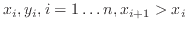

If the input is less than the minimum key value (0.1 here), then the operation outputs the corresponding value (0.3). Similarly if the input is greater than the maximum (0.9), the corresponding value (1) is output. If it lies in between two keys (eg 0.2), the the output is linearly interpolated (0.4).
0.1 0.3 0.5 0.7 0.9 1
More formally, a data block is an empirical function, based on a table
of pairs of values (
) read in from
a file. The function's output is linearly interpolated from the data,
ie: